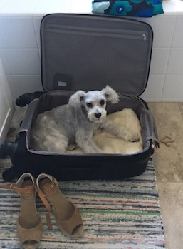

About Nena
This is Nena; she was born in Ann Arbor, Michigan. Nena short for Magdalena named after Magdalena Frida Kahlo. Why you ask? Isn’t it obvious, their bushy eyebrows of course! Nena is a Mini Schnauzer. Nena and I enjoy long walks, and she specially enjoys stopping at every fire hydrant in slight, and her favorite past time is cuddling and hanging at the dog park. Nena has done a bit of traveling.
A couple of places Nena has traveled to:
Virginia, Colorado, Las Vegas, and St. Louis.
